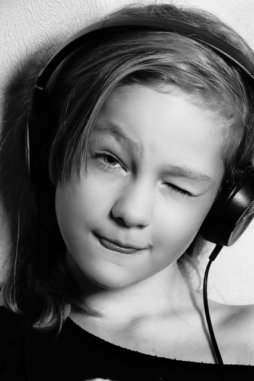
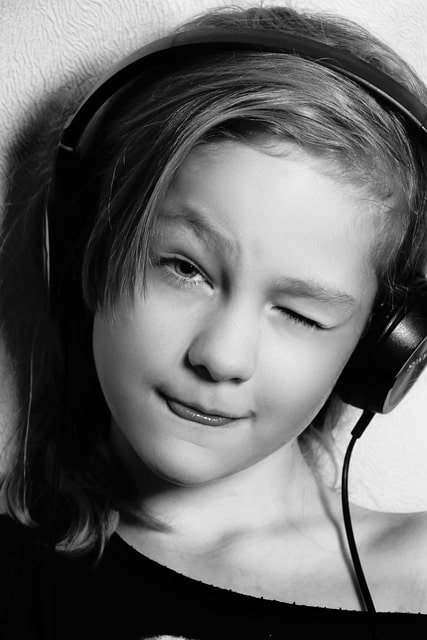

Automatic Programs
Hörprogramme, welche verschiedene Techniken kombinieren
Hearing programs that combine different techniques
Programas de audición que combinan diferentes técnicas
Programmes auditifs combinant différentes techniques
Programmi per l'udito che combinano diverse tecniche
Slušni programi koji kombiniraju različite tehnike
Andere Generatoren:
Other generators:
Otros generadores:
Autres générateurs :
Altri generatori:
Ostali generatori:
 Solfeggio+
Solfeggio+
 Secret of Five
 Binaural Beats
Secret of Five
 Binaural Beats
 Chakra Boost
Chakra Boost
 Single frequency
Single frequency
Bitte mit Kopfhörern nutzen!
Please use with headphones!
¡Úselo con auriculares!
Veuillez utiliser avec des écouteurs !
Si prega di utilizzare con le cuffie!
Molimo koristite sa slušalicama!
Diese Frequenzen funktionieren NUR über die Ohren.
Der Effekt wird durch die Differenz des linken und des rechten Ohres erzeugt.
Verwenden Sie gute Kopfhörer um den größtmöglichen Effekt zu erzeugen.
Wenn Sie Frequenzen suchen, die Sie über beliebige Lautsprecher abspielen können, oder
raumfüllende Klänge große Effekte bringen, wechseln Sie hier
zu den Solfeggio-Frequenzen.
These frequencies ONLY work through the ears.
The effect is created by the difference between the left and right ear.
Use good headphones to create the greatest possible effect.
If you are looking for frequencies that you can play through any speaker, or
Room-filling sounds bring great effects, switch here
on the Solfeggio frequencies.
Estas frecuencias SOLO funcionan a través de los oídos.
El efecto se crea por la diferencia entre el oído izquierdo y el derecho.
Utilice buenos auriculares para crear el mayor efecto posible.
Si está buscando frecuencias que pueda reproducir a través de cualquier altavoz, o
Los sonidos que llenan la habitación traen grandes efectos, cambie aquí
sobre las frecuencias de Solfeggio.
Ces fréquences fonctionnent UNIQUEMENT à travers les oreilles.
L'effet est créé par la différence entre l'oreille gauche et l'oreille droite.
Utilisez de bons écouteurs pour créer le plus grand effet possible.
Si vous recherchez des fréquences que vous pouvez lire sur n'importe quel haut-parleur, ou
Les sons qui remplissent la pièce apportent de superbes effets, changez ici
sur les fréquences du solfège.
Queste frequenze funzionano SOLO attraverso le orecchie.
L'effetto è creato dalla differenza tra l'orecchio sinistro e destro.
Usa buone cuffie per creare il massimo effetto possibile.
Se stai cercando frequenze che puoi riprodurre attraverso qualsiasi altoparlante, o
I suoni che riempiono la stanza portano grandi effetti, cambia qui
sulle frequenze del Solfeggio.
Ove frekvencije djeluju SAMO kroz uši.
Efekt se stvara razlikom između lijevog i desnog uha.
Koristite dobre slušalice za postizanje najvećeg mogućeg učinka.
Ako tražite frekvencije koje možete puštati preko bilo kojeg zvučnika, ili
Zvukovi koji ispunjavaju sobu donose sjajne efekte, prebacite se ovdje
na frekvencijama Solfeggia.
Lautstärke
Volume
Volumen
Volume
Volume
Volumen
80%
10 Min Extreme Erdung
10 Min Extreme grounding
10 Min Puesta a tierra extrema
10 Min Mise à la terre extrême
10 Min Messa a terra estrema
10 Min Ekstremno uzemljenje
20 Min Freude und Liebe
20 Min joy and love
20 Min alegría y amor
20 Min joie et amour
20 Min gioia e amore
20 Min radost i ljubav
30 Min Wellen-Meditation
30 Min Wave meditation
30 Min Meditación de olas
30 Min Méditation des vagues
30 Min Meditazione sulle onde
30 Min Valna meditacija
25 Min UFO Flug|Intensive Erfahrung auf Basis von 396Hz, welche dich auf den spannenden Trip von Schwerelosigkeit entführt.
25 Min UFO flight|Intense experience based on 396Hz, which takes you on the exciting trip of weightlessness.
25 Min Vuelo ovni|Intensa experiencia basada en 396Hz, que te lleva al emocionante viaje de la ingravidez.
25 Min Vol d'OVNI|Une expérience intense basée sur 396 Hz, qui vous emmène dans le voyage passionnant de l'apesanteur.
25 Min Volo dell'UFO|Esperienza intensa basata su 396 Hz, che ti porta nell'emozionante viaggio dell'assenza di gravità.
25 Min NLO let|Intenzivno iskustvo temeljeno na 396Hz, koje vas vodi na uzbudljivo putovanje bestežinskog stanja.
20 Min Konzentration und Fokus|Die Basis von 40Hz in Verbindung mit vertiefenden Rotationen bringt dich in den absoluten Fokus.
20 Min concentration and focus|The base of 40Hz combined with deepening rotations brings you into absolute focus.
20 Min concentración y enfoque|La base de 40 Hz combinada con rotaciones cada vez más profundas te permite concentrarte por completo.
20 Min concentration|La base de 40 Hz combinée à des rotations plus profondes vous amène à une concentration absolue.
20 Min concentrazione e attenzione|La base di 40Hz combinata con rotazioni di approfondimento ti porta in una messa a fuoco assoluta.
20 Min koncentracija i fokus|Baza od 40Hz u kombinaciji s dubljim rotacijama dovodi vas u apsolutni fokus.
30 Min Erweiterte Wahrnehmung|Durch die Verwendung der 18,98 Hz in Verbindung mit der 396-Solfeggio-Frequenz wird die Öffnung Deiner Wahrnehmung angestrebt.
30 Min Expanded perception|By using 18.98Hz in conjunction with the 396 Solfeggio frequency, the aim is to open your perception.
30 Min Percepción ampliada|Al utilizar 18,98 Hz junto con la frecuencia 396 Solfeggio, el objetivo es abrir tu percepción.
30 Min Perception élargie|En utilisant 18,98 Hz en conjonction avec la fréquence 396 Solfège, le but est d'ouvrir votre perception.
30 Min Percezione ampliata|Utilizzando 18,98 Hz insieme alla frequenza Solfeggio 396, l'obiettivo è aprire la tua percezione.
30 Min Proširena percepcija|Korištenjem 18,98 Hz u kombinaciji s frekvencijom 396 Solfeggio, cilj je otvoriti vašu percepciju.
20 Min Energieball
20 Min Energy ball
20 Min Bola de energía
20 Min Balle d'énergie
20 Min Palla energetica
20 Min Energetska lopta
90 Min Gedankenreise (lang)|Die Basis von 40Hz sorgt für erhöhte Aufmerksamkeit, wobei das Gehirn auf einen Bereich um 3Hz syncronisiert wird.
90 Min Mind-Travel (long)|The base of 40Hz ensures increased attention, with the brain being synchronized to a range around 3Hz.
90 Min viaje mental (largo)|La base de 40 Hz garantiza una mayor atención, y el cerebro se sincroniza en un rango de alrededor de 3 Hz.
90 Min Voyage mental (long)|La base de 40 Hz assure une attention accrue, le cerveau étant synchronisé sur une plage autour de 3 Hz.
90 Min Viaggio mentale (lungo)|La base di 40Hz garantisce una maggiore attenzione, con il cervello sincronizzato su una gamma intorno a 3Hz.
90 Min Putovanje uma (dugo)|Baza od 40 Hz osigurava povećanu pozornost, a mozak je sinkroniziran na raspon od oko 3 Hz.
30 Min Gedankenreise (kurz)|Die Basis von 40Hz sorgt für erhöhte Aufmerksamkeit, wobei das Gehirn auf einen Bereich um 3Hz syncronisiert wird.
30 Min Mind-Travel (short)|The base of 40Hz ensures increased attention, with the brain being synchronized to a range around 3Hz.
30 Min viaje mental (corto)|La base de 40 Hz garantiza una mayor atención, y el cerebro se sincroniza en un rango de alrededor de 3 Hz.
30 Min Voyage mental (court)|La base de 40 Hz assure une attention accrue, le cerveau étant synchronisé sur une plage autour de 3 Hz.
30 Min Viaggio mentale (corto)|La base di 40Hz garantisce una maggiore attenzione, con il cervello sincronizzato su una gamma intorno a 3Hz.
30 Min Putovanje uma (kratak)|Baza od 40 Hz osigurava povećanu pozornost, a mozak je sinkroniziran na raspon od oko 3 Hz.
90 Min Theta Sync|Die Basis von 40Hz sorgt für erhöhte Aufmerksamkeit, wobei das Gehirn auf einen Bereich um 4.5Hz syncronisiert wird.
90 Min Theta Sync|The base of 40Hz ensures increased attention, with the brain being synchronized to a range around 4.5Hz.
90 Min Theta Sync|La base de 40 Hz garantiza una mayor atención, y el cerebro se sincroniza en un rango de alrededor de 4.5 Hz.
90 Min Theta Sync|La base de 40 Hz assure une attention accrue, le cerveau étant synchronisé sur une plage autour de 4.5 Hz.
90 Min Theta Sync|La base di 40Hz garantisce una maggiore attenzione, con il cervello sincronizzato su una gamma intorno a 4.5Hz.
90 Min Theta Sync|Baza od 40 Hz osigurava povećanu pozornost, a mozak je sinkroniziran na raspon od oko 4.5 Hz.
90 Min Deep Flow|Die Basis von 38Hz sorgt für erhöhte Aufmerksamkeit, wobei das Gehirn auf einen Bereich um 4.5Hz syncronisiert wird.
90 Min Deep Flow|The base of 38Hz ensures increased attention, with the brain being synchronized to a range around 4.5Hz.
90 Min Deep Flow|La base de 38 Hz garantiza una mayor atención, y el cerebro se sincroniza en un rango de alrededor de 4.5 Hz.
90 Min Deep Flow|La base de 38 Hz assure une attention accrue, le cerveau étant synchronisé sur une plage autour de 4.5 Hz.
90 Min Deep Flow|La base di 38Hz garantisce una maggiore attenzione, con il cervello sincronizzato su una gamma intorno a 4.5Hz.
90 Min Deep Flow|Baza od 38 Hz osigurava povećanu pozornost, a mozak je sinkroniziran na raspon od oko 4.5 Hz.
90 Min Sun'n earth|Die 150MHz der Sonne werden mit den 7.83Hz der Erde kombiniert, was zu einer tiefen Verbindung mit dem Universum führt.
90 Min Sun'n earth|The Sun's 150MHz is combined with the Earth's 7.83Hz, resulting in a deep connection with the Universe.
90 Min Sun'n earth|Los 150MHz del Sol se combinan con los 7,83Hz de la Tierra, lo que da como resultado una conexión profunda con el universo.
90 Min Sun'n earth|Les 150 MHz du Soleil sont combinés aux 7,83 Hz de la Terre, ce qui crée une connexion profonde avec l'Univers.
90 Min Sun'n earth|I 150 MHz del Sole si combinano con i 7,83 Hz della Terra, determinando una profonda connessione con l'Universo.
90 Min Sun'n earth|Sunčevih 150MHz kombinira se sa Zemljinih 7,83Hz, što rezultira dubokom vezom sa Svemirom.
30 Min Sweet Spot|Die Basis von 38Hz sorgt für erhöhte Aufmerksamkeit, wobei das Gehirn auf einen Bereich um 8.1Hz syncronisiert wird.
30 Min Sweet Spot|The base of 38Hz ensures increased attention, with the brain being synchronized to a range around 8.1Hz.
30 Min Sweet Spot|La base de 38 Hz garantiza una mayor atención, y el cerebro se sincroniza en un rango de alrededor de 8.1 Hz.
30 Min Sweet Spot|La base de 38 Hz assure une attention accrue, le cerveau étant synchronisé sur une plage autour de 8.1 Hz.
30 Min Sweet Spot|La base di 38Hz garantisce una maggiore attenzione, con il cervello sincronizzato su una gamma intorno a 8.1Hz.
30 Min Sweet Spot|Baza od 38 Hz osigurava povećanu pozornost, a mozak je sinkroniziran na raspon od oko 8.1 Hz.
WARNUNG
WARNING
ADVERTENCIA
AVERTISSEMENT
AVVERTIMENTO
UPOZORENJE
Die Verwendung von solchen Frequenzmustern KANN Ihren Gleichgewichtssinn stören und Übelkeit hervorrufen!
The use of such frequency patterns CAN affect your Disturb your sense of balance and cause nausea!
El uso de tales patrones de frecuencia PUEDE afectar su ¡Perturbe su sentido del equilibrio y provoque náuseas!
DL'utilisation de tels modèles de fréquences PEUT affecter votre Perturbez votre sens de l'équilibre et provoquez des nausées !
L'uso di tali schemi di frequenza PUÒ influenzare il tuo Disturba il tuo senso dell'equilibrio e provoca nausea!
Korištenje takvih frekvencijskih obrazaca MOŽE utjecati na vaše Poremetiti osjećaj ravnoteže i izazvati mučninu!
Hören Sie diese Frequenzen niemals während Sie ein Fahrzeug steuern oder Ihre Aufmerksamkeit in anderer Weise gefordert ist! Sollten Sie unangenehme oder unerwünschte Effekte wahrnehmen, beenden Sie die Anwendung SOFORT! Sollten diese Effekte länger ahalten, kontaktieren Sie einen Arzt. Wir übernehmen keine Haftung/Verantwortung für jede Art von Schädigung.
Never listen to these frequencies while operating a vehicle or your attention is required in some other way! If you notice any unpleasant or unwanted effects, stop using it IMMEDIATELY! If these effects persist, contact a doctor. We assume no liability/responsibility for any kind of damage.
Nunca escuche estas frecuencias mientras conduce un vehículo. ¡o se requiere su atención de alguna otra manera! Si nota algún efecto desagradable o no deseado, deje de usarlo. ¡INMEDIATAMENTE! Si estos efectos persisten, póngase en contacto con un médico. No asumimos ninguna obligación/responsabilidad por ningún tipo de daño.
N'écoutez jamais ces fréquences lorsque vous conduisez un véhicule ou votre attention est requise d'une autre manière ! Si vous remarquez des effets désagréables ou indésirables, arrêtez de l'utiliser IMMÉDIATEMENT! Si ces effets persistent, contactez un médecin. Nous n'assumons aucune responsabilité pour tout type de dommage.
Non ascoltare mai queste frequenze durante la guida di un veicolo o la tua attenzione è richiesta in qualche altro modo! Se noti effetti spiacevoli o indesiderati, smetti di usarlo SUBITO! Se questi effetti persistono, contattare un medico. Non ci assumiamo alcuna responsabilità/responsabilità per qualsiasi tipo di danno.
Nikada ne slušajte ove frekvencije dok upravljate vozilom ili je vaša pozornost potrebna na neki drugi način! Ako primijetite bilo kakve neugodne ili neželjene učinke, prestanite ga koristiti ODMAH! Ako ovi učinci potraju, obratite se liječniku. Ne preuzimamo nikakvu odgovornost/odgovornost za bilo kakvu štetu.
Änderungsvorschläge und Kontaktaufnahme
Wir sind gespannt auf Ihr Feedback!
Zu einfachen Kontaktaufnahme senden Sie eine Email an kontakt@truthupclose.com
Wie funktioniert es?
How does it work?
¿Como funciona?
Comment ça marche?
Come funziona?
Kako radi?
Elektro-magnetische Frequenzen umgeben uns in jeder Sekunde unseres Tages. Sie haben in verschiedenster Weise Einfluss auf unsere Befindlichkeit und Stimmungen. Am einfachsten wird das verständlich, wenn wir an Musik denken. Verschiedene Musikstile und Genres unterstützen unsere aktuelle Stimmung oder verändern unsere Stimmung in gewisser Weise. Ein trauriger, langsamer Song kann uns schnell in eine schwere Stimmung bringen, so wie ein beschwingtes Trompetensolo unsere Innenwelt zum Hüpfen bringen kann.
Electro-magnetic frequencies surround us every second of our day. you have in influence our moods and moods in various ways. That will be the easiest understandable when we think of music. Various music styles and genres support our current mood or change our mood in some way. A sad, slow song can quickly get us in a heavy mood, like a lively trumpet solo can make our inner world jump.
Las frecuencias electromagnéticas nos rodean cada segundo de nuestro día. tienes en influir en nuestros estados de ánimo y estados de ánimo de diversas maneras. eso sera lo mas facil comprensible cuando pensamos en la música. Varios estilos y géneros musicales apoyan nuestra estado de ánimo actual o cambiar nuestro estado de ánimo de alguna manera. Una canción triste y lenta puede ponernos de mal humor rápidamente, como un un solo de trompeta animado puede hacer que nuestro mundo interior salte.
Les fréquences électromagnétiques nous entourent à chaque seconde de notre journée. tu as dans influencer nos humeurs et nos humeurs de diverses manières. Ce sera le plus simple compréhensible quand on pense à la musique. Divers styles et genres musicaux soutiennent notre l'humeur actuelle ou changer notre humeur d'une manière ou d'une autre. Une chanson triste et lente peut rapidement nous mettre d'humeur lourde, comme un un solo de trompette animé peut faire bondir notre monde intérieur.
Le frequenze elettromagnetiche ci circondano ogni secondo della nostra giornata. hai dentro influenzare i nostri stati d'animo e stati d'animo in vari modi. Sarà il più facile comprensibile quando pensiamo alla musica. Vari stili e generi musicali supportano il nostro stato d'animo attuale o cambiare il nostro stato d'animo in qualche modo. Una canzone triste e lenta può metterci rapidamente di cattivo umore, come a un vivace assolo di tromba può far saltare il nostro mondo interiore.
Elektromagnetske frekvencije okružuju nas svake sekunde našeg dana. imate u na razne načine utječu na naša raspoloženja i raspoloženja. Tako će biti najlakše razumljivo kada razmišljamo o glazbi. Razni glazbeni stilovi i žanrovi podržavaju naše trenutno raspoloženje ili na neki način promijeniti naše raspoloženje. Tužna, spora pjesma može nas brzo dovesti u teško raspoloženje, poput živahni solo na trubi može potaknuti naš unutarnji svijet.
Bestimmte isolierte Schwingungsmuster können diese Stimmungen gezielt erzeugen, verstärken oder
auflösen.
Wenn wir annehmen, dass jeder Teil unseres Körpers - und eventuell auch die Schwingungsfelder
außerhalb unseres Körpers - eine eigene Stimmung haben, können wir mit isolierten Frequenzen
auch auf diese Bereiche einwirken.
Jeder wird selbst seine Erfahrungen damit machen müssen - darum probieren Sie es aus!
Certain isolated vibrational patterns can specifically create, amplify, or enhance these moods
dissolve.
If we accept that every part of our body - and possibly also the vibrational fields
outside of our body - we can have our own mood with isolated frequencies
also affect these areas.
Everyone will have to make their own experiences with it - so try it out!
Ciertos patrones vibratorios aislados pueden crear, amplificar o mejorar específicamente estos estados de ánimo.
disolver.
Si aceptamos que cada parte de nuestro cuerpo - y posiblemente también los campos vibratorios
fuera de nuestro cuerpo: podemos tener nuestro propio estado de ánimo con frecuencias aisladas
también afectan a estas áreas.
Todos tendrán que hacer sus propias experiencias con él, ¡así que pruébalo!
Certains modèles vibratoires isolés peuvent spécifiquement créer, amplifier ou améliorer ces humeurs
dissoudre.
Si nous acceptons que chaque partie de notre corps - et peut-être aussi les champs vibratoires
en dehors de notre corps - nous pouvons avoir notre propre humeur avec des fréquences isolées
affectent également ces zones.
Chacun devra en faire sa propre expérience - alors essayez-le !
Alcuni schemi vibrazionali isolati possono creare, amplificare o migliorare specificamente questi stati d'animo
sciogliere.
Se accettiamo che ogni parte del nostro corpo - e possibilmente anche i campi vibrazionali
al di fuori del nostro corpo - possiamo avere il nostro umore con frequenze isolate
riguardano anche queste zone.
Ognuno dovrà fare le proprie esperienze con esso, quindi provalo!
Određeni izolirani vibracijski obrasci mogu posebno stvoriti, pojačati ili poboljšati ova raspoloženja
otopiti.
Ako prihvatimo da svaki dio našeg tijela – a moguće i vibracijska polja
izvan našeg tijela – možemo imati vlastito raspoloženje s izoliranim frekvencijama
također utječu na ova područja.
Svatko će morati steći vlastito iskustvo s njim - stoga ga isprobajte!

Starten
Start
Comenzar
Commencer
Inizio
Početak
Starten Sie eine Frequenz durch Klick auf eine der Bilder-Kacheln. Vorher
können Sie über die Regler am Anfang der Seite die Sitzungsdauer (automatische Abschaltung) und
die Lautstärke einstellen. Eine Sitzung ist auf 10 Minuten vor-eingestellt. Das erleichtert
Neulingen den Einstieg ohne zu überfordern. Fortgeschrittene können die Sitzung auf bis zu 100
Minuten verlängern. Längere Anwendung kann die Effekte durchaus verstärken, aber auch zu
Überforderung führen.
Bitte handeln Sie verantwortungsvoll und umsichtig!
Start a frequency by clicking on one of the image tiles. Beforehand
you can use the controls at the top of the page to set the session duration (automatic shutdown) and
adjust the volume. A session is preset to 10 minutes. That makes it easier
newcomers to get started without being overwhelmed. Advanced users can extend the session up to 100
extend minutes. Longer use can definitely increase the effects, but also too
lead to being overwhelmed.
Please act responsibly and prudently!
Inicie una frecuencia haciendo clic en uno de los mosaicos de imágenes. Antemano
puede usar los controles en la parte superior de la página para establecer la duración de la sesión (apagado automático) y
ajusta el volumen. Una sesión está preestablecida en 10 minutos. Eso lo hace más fácil
recién llegados a empezar sin sentirse abrumados. Los usuarios avanzados pueden extender la sesión hasta 100
ampliar minutos. El uso prolongado definitivamente puede aumentar los efectos, pero también
llevar a sentirse abrumado.
¡Actúe con responsabilidad y prudencia!
Démarrez une fréquence en cliquant sur l'une des tuiles d'image. Préalablement
vous pouvez utiliser les commandes en haut de la page pour définir la durée de la session (arrêt automatique) et
régler le volume. Une session est prédéfinie sur 10 minutes. Cela rend plus facile
nouveaux arrivants pour démarrer sans être submergés. Les utilisateurs avancés peuvent prolonger la session jusqu'à 100
prolonger les minutes. Une utilisation plus longue peut certainement augmenter les effets, mais aussi trop
conduire à être submergé.
Veuillez agir de manière responsable et prudente !
Avvia una frequenza facendo clic su uno dei riquadri immagine. In anticipo
puoi utilizzare i controlli nella parte superiore della pagina per impostare la durata della sessione (spegnimento automatico) e
regolare il volume. Una sessione è preimpostata a 10 minuti. Questo lo rende più facile
nuovi arrivati per iniziare senza essere sopraffatti. Gli utenti avanzati possono estendere la sessione fino a 100
prolungare i minuti. Un uso più lungo può sicuramente aumentare gli effetti, ma anche troppo
portare ad essere sopraffatti.
Si prega di agire in modo responsabile e prudente!
Započnite učestalost klikom na jednu od pločica slike. Unaprijed
možete koristiti kontrole na vrhu stranice za postavljanje trajanja sesije (automatsko isključivanje) i
podesite glasnoću. Sesija je unaprijed postavljena na 10 minuta. To olakšava
pridošlicama da započnu bez preopterećenosti. Napredni korisnici mogu produžiti sesiju do 100
produžiti minute. Dulja uporaba svakako može povećati učinke, ali i previše
dovesti do preopterećenosti.
Molimo vas da se ponašate odgovorno i razborito!
Kopfhörer oder Lautsprecher
Headphones or speakers
Auriculares o altavoces
écouteurs ou haut-parleurs
Cuffie o altoparlanti
Slušalice ili zvučnike
Verwenden Sie geeignete, gut funktionierende Kopfhörer oder Lautsprecher mit festem Stand. Ein knirschendes oder flirrendes Nebengeräusch kann die Erfahrung massiv verschlechtern. Verwenden Sie - wenn möglich - Lautsprecher oder Kopfhörer mit großen "Treibern". In der Regel können diese die Frequenzen deutlicher abbilden ohne Frequenzteile zu unterschlagen und damit den Effekt zu mindern.
Use suitable, well-functioning headphones or speakers with a firm footing. A crunching or shimmering background noise can massively impact the experience deteriorate. If possible, use large speakers or headphones "drivers". As a rule, these can show the frequencies more clearly without frequency parts suppressed and thus reduce the effect.
Use auriculares o parlantes adecuados y que funcionen bien con una base firme Un ruido de fondo crujiente o brillante puede impactar enormemente la experiencia deteriorarse. Si es posible, utilice altavoces o auriculares grandes "conductores". Por regla general, estos pueden mostrar las frecuencias más claramente sin partes de frecuencia suprimir y así reducir el efecto.
Utilisez des écouteurs ou des haut-parleurs adaptés et en bon état de fonctionnement Un bruit de fond craquant ou scintillant peut avoir un impact considérable sur l'expérience détériorer. Si possible, utilisez de grands haut-parleurs ou des écouteurs "Conducteurs". En règle générale, ceux-ci peuvent montrer les fréquences plus clairement sans parties de fréquence supprimé et ainsi réduire l'effet.
Utilizzare cuffie o altoparlanti adatti e ben funzionanti con una base solida Un rumore di sottofondo scricchiolante o luccicante può avere un impatto enorme sull'esperienza deteriorare. Se possibile, utilizzare altoparlanti o cuffie di grandi dimensioni "autisti". Di norma, questi possono mostrare le frequenze in modo più chiaro senza parti di frequenza soppresso e quindi ridurre l'effetto.
Koristite odgovarajuće slušalice ili zvučnike koji dobro funkcioniraju s čvrstim osloncem. Škripanje ili svjetlucanje pozadinske buke može znatno utjecati na iskustvo pogoršati. Ako je moguće, koristite velike zvučnike ili slušalice "vozači". U pravilu, oni mogu jasnije prikazati frekvencije bez frekvencijskih dijelova potisnuti i time smanjiti učinak.
Anwendung
Application
Solicitud
Application
Applicazione
Primjena
Es ist nicht nötig die Frequenzen über die Ohren zu konsumieren. Nach unserer Erfahrung ist es sinnvoller, die betroffenen Bereiche direkt zu beschallen. So z.B. ist es hilfreich bei schmerzenden Knien, den Kopfhörer direkt auf das Knie anzulegen.
It is not necessary to consume the frequencies through the ears. After In our experience, it makes more sense to irradiate the affected areas directly. So e.g. is it helps with aching knees to put the headphones directly on the knee.
No es necesario consumir las frecuencias a través de los oídos. Después En nuestra experiencia, tiene más sentido irradiar directamente las áreas afectadas. Entonces, por ejemplo, es ayuda con el dolor de rodillas poner los auriculares directamente sobre la rodilla.
Il n'est pas nécessaire de consommer les fréquences par les oreilles. Après D'après notre expérience, il est plus logique d'irradier directement les zones touchées. Donc par exemple est cela aide avec les genoux douloureux de mettre les écouteurs directement sur le genou.
Non è necessario consumare le frequenze attraverso le orecchie. Dopo Nella nostra esperienza, ha più senso irradiare direttamente le aree interessate. Così ad esempio è aiuta con le ginocchia doloranti per mettere le cuffie direttamente sul ginocchio.
Nije potrebno konzumirati frekvencije kroz uši. Nakon Prema našem iskustvu, ima smisla izravno zračiti zahvaćena područja. Tako je npr kod bolnih koljena pomaže stavljanje slušalica izravno na koljeno.
Frequenzen
Frequencies
Frecuencias
Fréquences
Frequenze
Frekvencije
Unser Programm erzeugt zu jeder Hauptfrequenz zwei Nebenfrequenzen, um das Hörgefühl angenehmer
zu machen und den bestmöglichen Effekt auf allen Lautsprechern zu gewährleisten.
Die Nebenfrequenzen sind:
Unter 530 Hz: 1 Oktave tiefer + 1 Oktave höher
Über 530 Hz: 1 Oktave tiefer + 2 Oktaven tiefer
Our program generates two sub-frequencies for each main frequency in order to make the listening experience more pleasant
and to ensure the best possible effect on all speakers.
The secondary frequencies are:
Below 530 Hz: 1 octave down + 1 octave up
Above 530 Hz: 1 octave down + 2 octaves down
Nuestro programa genera dos subfrecuencias para cada frecuencia principal con el fin de hacer más agradable la experiencia auditiva
y para garantizar el mejor efecto posible en todos los altavoces.
Las frecuencias secundarias son:
Por debajo de 530 Hz: 1 octava abajo + 1 octava arriba
Por encima de 530 Hz: 1 octava abajo + 2 octavas abajo
Notre programme génère deux sous-fréquences pour chaque fréquence principale afin de rendre l'expérience d'écoute plus agréable
et pour assurer le meilleur effet possible sur tous les haut-parleurs.
Les fréquences secondaires sont :
En dessous de 530 Hz : 1 octave vers le bas + 1 octave vers le haut
Au dessus de 530 Hz : 1 octave vers le bas + 2 octaves vers le bas
Il nostro programma genera due sottofrequenze per ogni frequenza principale in modo da rendere più piacevole l'esperienza di ascolto
e per garantire il miglior effetto possibile su tutti gli altoparlanti.
Le frequenze secondarie sono:
Al di sotto di 530 Hz: 1 ottava sotto + 1 ottava sopra
Oltre 530 Hz: 1 ottava sotto + 2 ottave sotto
Naš program generira dvije podfrekvencije za svaku glavnu frekvenciju kako bi iskustvo slušanja bilo ugodnije
te osigurati najbolji mogući učinak na sve zvučnike.
Sekundarne frekvencije su:
Ispod 530 Hz: 1 oktava dolje + 1 oktava gore
Iznad 530 Hz: 1 oktava dolje + 2 oktave dolje